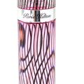

and cutting for building purposes, but the great proportion of it is not. Dr. Jackson thus describes the geology of Streaked mountain : ''It is composed of a coarse variet}' of granite which has burst through the surrounding gneiss that recline upon its sides, and form a large proportion of its mass. The granite appears in huge veins which run east- north-east and west-south-west. The gneiss alter- nates with granular limestone suitable for agricultural purposes.

From what has been said of the character of the rocks, it will be readily understood that Paris has a granitic soil. In other words, that the basis of the soil was formed by the disintegration of granite and that the constituents of the granite which afe quartz, feldspar and mica, form the bulk of the soil. Lime has been spoken of as existing in connection with gneiss, and small quantities of lime will be found mixed with the other constituents. This soil had been HISTORY OF PARIS. 89 "gathering fertilit}' from the repose of ages," and every 3'ear's crop of forest leaves which had drawn nutrition largely from the atmos- phere, added fresh fertilit}' to the land. Vegetable mould was there- fore, mixed with the granite constituents, forming a strong and fer- tile soil, all read}' as soon as the trees were cut and removed and the land subdued, to produce heavy crops of corn, potatoes, the cereal grains and the best grasses. Such a soil when boulders and cobbles abound, is hard to subdue and bring into cultivation, and hard to cultivate, but when once subdued and when well treated, it will alwaj's respond in bountiful harvests. Paris is a good town for stock husbandry, and this industiy should be made more of a spec- ialty. The hills afford the best of grazing, and a large proportion of the arable lands of the town is excellent for grass. The town is well watered ; some localities are springy, and such places would be greatl}' improved b}" drainage. On the river are belts of bottom land composed of alluvium, narrow generally but occasionall}' widen- ing into broad and fertile fields. Above Snow's Falls is quite a large area of low ground, known years ago as the "Bemis Meadow ;" this has been found very profitable to the owners, yielding large crops of grass year after year without expense in dressing or tillage. The southwest part of the town is more level, it being the begining of that broad plain which takes in the south part of Norway, and extends far into Oxford. The soil here is a sand}- loam, easily culti- vated and excellent for corn-culture and truck-farming.